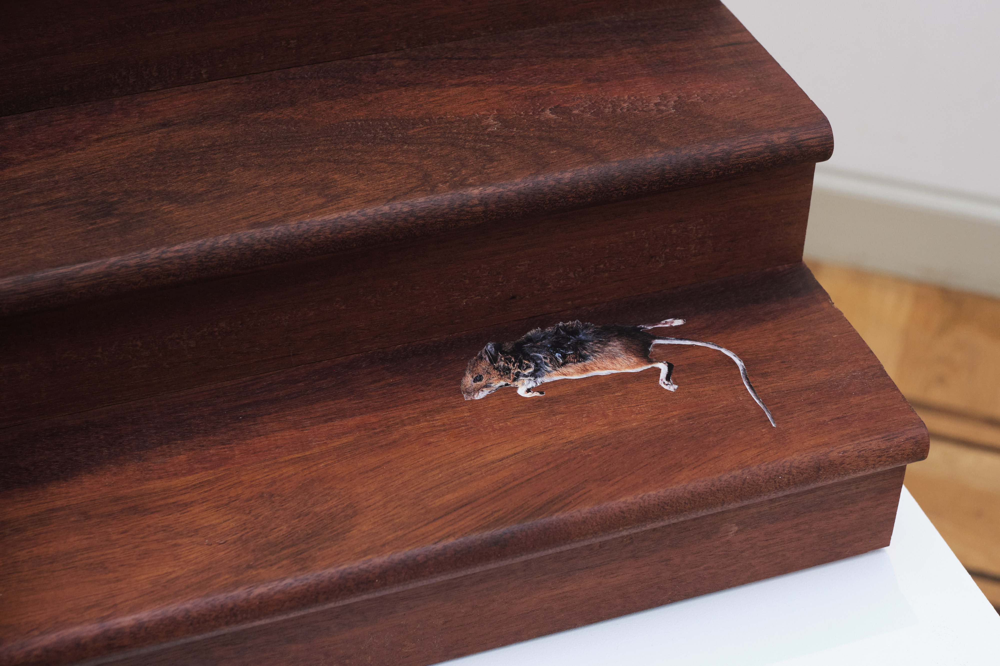
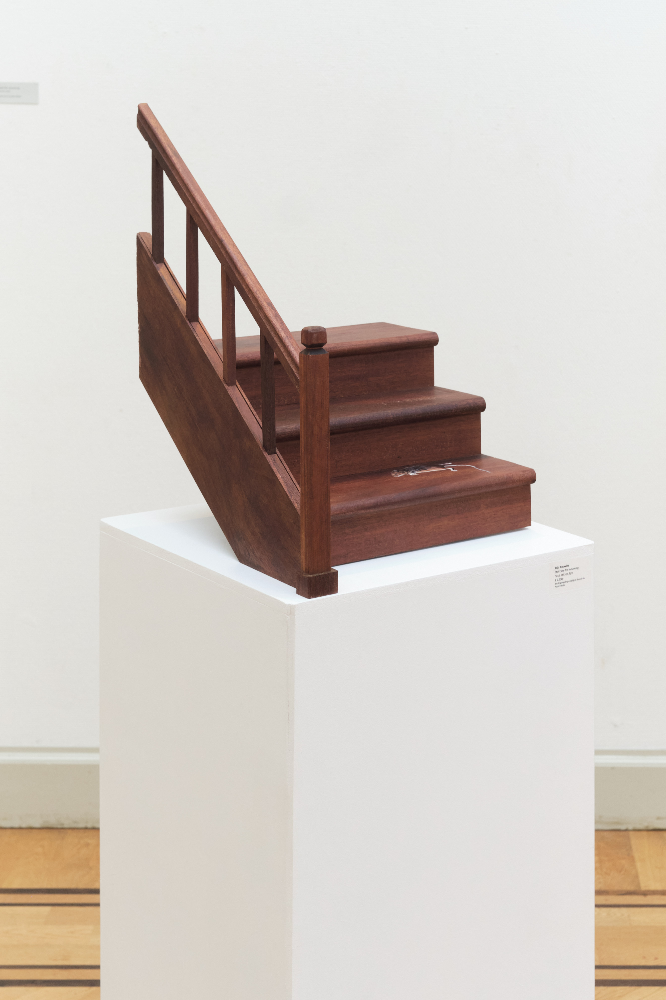

Staircase for mourning, 2025
An ode to the animals that die at the hands of humans, that get forgotten in our homes and thrown out with the trash (an ode to the mouse that died on your stairs).
40cm x 37cm x 50cm
Photographed by Hannah Schleifer.



